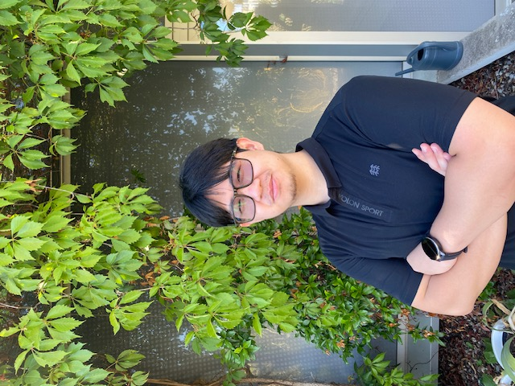

Sparlay Khan
Manager · Pakistan
ActiveMember since 2025, with an interest in environmental studies, exploring nature, and travelling.
01 / THE COMMUNITY
A shared interest. A friendly hello. A few familiar faces in a new city.
Profiles marked Demo are fictional, with AI-generated portraits and placeholder contact details.
Manager · Pakistan
ActiveMember since 2025, with an interest in environmental studies, exploring nature, and travelling.

Volunteer · China
ActiveA sports enthusiast and ski instructor with a background in computer science.

Welcome buddy · France
Active · DemoAlways up for a photo walk, a new neighbourhood, and helping someone feel at home.

Event volunteer · Brazil
Active · DemoCollecting good music, small cafés, and reasons to bring everyone around the same table.

Community member · Japan
Active · DemoFinding favourite corners of Paris through gallery visits, sketchbooks, and coffee with friends.

Community member · Morocco
Active · DemoA weekend cook who believes the easiest way to get to know someone is to share a meal.

Event volunteer · Sweden
Active · DemoThe person suggesting a riverside walk, a friendly game, or just one more stop on the way home.

Former member · India
Alumni · DemoStill connected to the people she met in Paris, with plenty of first-year stories to share.
Welcome buddy · Germany
Active · DemoEnjoys finding a new walking route, learning a board game, and making room for one more player.
Volunteer · Italy
Active · DemoKeeps a sketchbook close by and enjoys practising languages through relaxed, everyday conversations.
Community member · Mexico
Active · DemoOften has a book in her bag and a quiet cycling route to suggest for a free afternoon.
Former member · Senegal
Alumni · DemoStays in touch from afar, sharing student-life memories and encouragement when time allows.
Community member · China
Active · DemoKeeps a camera handy for ordinary city moments and enjoys a relaxed badminton game after a busy week.
Event volunteer · France
Active · DemoLikes exploring by bike, trading song recommendations, and helping set up a table before an event.
Community member · India
Active · DemoEnjoys comparing small data projects and slowing down on weekends to take photos around the city.
Volunteer · China
Active · DemoCollects film recommendations and experiments with simple recipes to share at a small dinner.
Event volunteer · Morocco
Active · DemoUp for a casual football game or a long conversation about the last film everyone watched.
Community member · Brazil
Active · DemoBalances quiet baking afternoons with trips to the pool and likes swapping recipes with friends.
Community member · France
Active · DemoUsually has a library book or a small craft project on the go, and enjoys making things in company.
Volunteer · India
Active · DemoEnjoys small theatre productions and noticing what is growing in the city's shared gardens.
Community member · Pakistan
Active · DemoNotices unusual doorways and building details on long walks, often taking the scenic route home.
Former member · Morocco
Alumni · DemoNow living elsewhere, she occasionally checks in online to share design finds and memories of student life.
Welcome buddy · France
Active · DemoEnjoys an easy morning run and trying a new recipe, with a preference for meals made together.
Former member · China
Alumni · DemoKeeps in touch from afar when time allows, swapping hiking photos and updates on small coding projects.